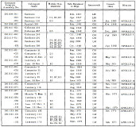
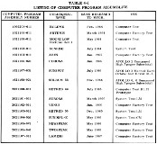
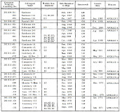
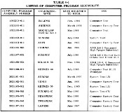

Programs
with
names like Sundisk, Solarium, and Sunspot were pre-Colossus versions of the Command
Module AGC's software. They were not forms of Colossus as such, but provided
some code for Colossus.
If
you click on the image to the left, you can see a simplified family
tree for Colossus, drawn by
me, while if you click on the tables to the right depicts the
various versions of the software from Apollo-era documents.
Programs
with
names like Sundisk, Solarium, and Sunspot were pre-Colossus versions of the Command
Module AGC's software. They were not forms of Colossus as such, but provided
some code for Colossus.
If
you click on the image to the left, you can see a simplified family
tree for Colossus, drawn by
me, while if you click on the tables to the right depicts the
various versions of the software from Apollo-era documents.| Name |
System |
Release Date |
|---|---|---|
| SUNRISE 38 |
CM Block I |
Not Released |
| SUNRISE 45 |
CM Block I |
28 November 1964 |
| SUNRISE 69 |
CM Block I |
15 March 1965 |
| AURORA 85 |
LM |
15 March 1966 |
| AURORA 88 |
LM |
15 July 1966 |
| SUNDIAL B |
CM Block II |
16 June 1966 |
| SUNDIAL C |
CM Block II |
24 June 1966 |
| SOLARIUM 54 |
CM Block I |
November 1966 |
| SOLARIUM 55 |
CM Block I |
November 1966 |
| SUNDIAL D |
CM Block II |
1 March 1967 |
| SUNDIAL E |
CM Block II |
13 March 1967 |
| Mission | CSM number |
Mission Type |
CM Program | Revision | Source Code |
Other Mission-Specific
Documentation |
Notes |
|---|---|---|---|---|---|---|---|
| N/A |
N/A |
N/A |
TRIVIUM |
12/1963 |
Syntax-highlighted,
hyperlinked HTML Scanned page images |
N/A |
This is an unusual
program, in that its sole purpose was to demonstrate usage
of the original AGC assembler, YUL. In fact, its very
short program listing (only one page of source code!) that
was attached to a 1963 manual for YUL. The document
itself was obtained from the personal papers of the late
Russel Larson. |
| Apollo 3 (AS-202) |
CSM-011 |
N/A |
Corona |
261 |
On our wish list |
Document
Library |
Quoting from the wikipedia article:"AS-202 (also referred to as SA-202) was the second unmanned, suborbital test flight of a production Block I Apollo Command/Service Module launched with the Saturn IB launch vehicle. It was launched on August 25, 1966 and was the first flight which included the spacecraft Guidance and Navigation Control system and fuel cells. The success of this flight enabled the Apollo program to judge the Block I spacecraft and Saturn IB ready to carry men into orbit on the next mission, AS-204." |
| Apollo 1 (AS-204A) |
CSM-012 |
N/A |
Sunspot |
≥247 |
On our wish list |
Yes, Apollo 1
never flew, but it deserves a place of honor. I'd sure
like to know where this program can be found! This was a Block I spacecraft. The exact version of SUNSPOT that would have flown isn't presently known to me, but SUNSPOT 247 is the version TRW evaluated in their independent validation testing. Therefore, the version that would have been in the AGC at mission time must be at least 247. |
|
| Apollo 4 (AS-501) |
CSM-017 |
A-1 |
Solarium |
54 |
Syntax-highlighted, hyperlinked, HTML Scanned page images |
Apollo 4 was an unmanned mission,
but it did have a working CSM and a working AGC in the
CM. |
|
| Apollo 6 |
CM-020 SM-014 |
A-2 |
Solarium |
55 |
Syntax-highlighted, hyperlinked, HTML Scanned page images |
Document Library |
Apollo 6 was
an unmanned mission, but it did have a working CSM and a
working AGC in the CM. Eldon C. Hall's copy of this
program listing is in the American Computer Museum, which
has graciously allowed us to digitize the program listing
for use in Virtual AGC. |
| 2TV-1 |
CSM-098 |
N/A |
Sundial |
E |
Core
rope dump Source code is on our wish list |
"2TV-1" stands for Block II Thermal Vacuum no. 1, and more-or-less describes the missions, which were to subject the spacecraft to vacuum and to thermal shock whilst the astronauts did astronauty things. |
|
| Apollo 7 |
CSM-101 |
C |
Sundisk |
282 |
On our wish
list |
Unfortunately, we do not presently have
this software, which flew on Apollo 7. For further insights, note document E-2150, "Guidance, Navigation, and Control Block II Command and Service Module Functional Description and Operation Using Flight Program SUNDISK (Rev. 282)", whose preface reads: "The purpose of this document is twofold. The first is to provide a functional description (operationally oriented) of the CSM GNCS hardware and software and the interfaces with other SC systems. The level of detail is that required to identify and define telemetry outputs. Also included are functional flow diagrams of the Sundisk 282 programs and routines together with lists of verbs, nouns, option codes, and checklist codes for this flow. The second purpose is to provide the operational procedures for this hardware and software including malfunction procedures, and program notes. The nominal airborne expanded and condensed checklist for Sundisk appear in the Guidance System Operation Plan, R547." |
|
|
Apollo 8 |
CSM-103 |
C' |
Colossus
1 |
237 |
Syntax-highlighted, hyperlinked, HTML Scanned page images |
Colossus 237 flew on Apollo 8. The Colossus 237 program listing was made available by original AGC developer Fred Martin. (Thanks, Fred!) The listing cuts off abruptly after page 1557—whereas you'd normally anticipate that there are 1700+ pages—so some of the assembler-generated tables at the end of the listing are missing. Of particular inconvenience, because it presents special problems for verifying the correctness of the simulation, is the absence of the octal listing and of the memory-bank checksums. However, all of the source code is present, and that's enough to work with. Note that we have a digital simulation of Colossus 237, though it only covers a bailout during burn (Colossus Software Anomaly Report #45, of which we unfortunately don't presently have a copy). This is an Apollo-era simulation, and not one produced by the Virtual AGC Project. It is the only Colossus digital simulation available so far, although there are a number of Luminary digital simulations in our library, and as such it has a unique value. Specifically, it has pad-loads, though those pad-loads are for March 1969 rather than for December 1968. |
|
|
Apollo 9 |
CSM-104 |
D |
Colossus 1A |
249 |
Syntax-highlighted,
hyperlinked, HTML The original raw scans, unprocessed |
Document Library |
Two separate sets of scanned images of the
Colossus 249 program, which was the CM software that flew on
Apollo 9, are available. They are from different
reproductions of the same original 1968 printout, as
owned by different AGC developers. Scanned image set
#1 is in far better condition than set #2 and is more
legible, and is the only one linked here. But only the
less-legible set #2 was actually available to me when I
originally implemented Colossus 249. Any hand-written
notes on the listings are from the original developers (as
far as I know), and so those notes differ on the two image
sets. |
| Apollo
10 |
CSM-106 |
F |
Colossus
2 (Comanche) |
44 |
Syntax-highlighted, hyperlinked, HTML |
Reconstruction  |
This is the
first software release of Comanche targeted for Apollo 10
whose rope-memory modules were manufactured. It is not
the version that was eventually flown in the mission. |
| 45 |
Syntax-highlighted, hyperlinked, HTML | This is the second
revision of Comanche targeted for Apollo 10 with rope-memory
modules actually manufactured. It ended up not being
flown in the mission. |
|||||
| 45/2 |
Syntax-highlighted, hyperlinked, HTML | This is the third
and final revision of Comanche for Apollo 10, and is the one
actually flown in the mission. |
|||||
| Apollo
11 |
CSM-107 |
G |
Colossus
2A (Comanche) |
51 |
Syntax-highlighted, hyperlinked, HTML | Comanche 51 was
the software release initially intended to be used
in the Apollo 11 Command Module. Its rope-memory
modules were manufactured. However, there were
subsequent revisions to the software before the mission
occurred, so Comanche 51 never flew, and Comanche 55 (see
below) did instead. |
|
| 55 |
Syntax-highlighted,
hyperlinked, HTML Scanned page images |
This is the 2nd and final revision of
Colossus for Apollo 11, and is the one actually flown in the
mission. |
|||||
|
Apollo 12 |
CSM-108 |
H-1 |
Colossus 2C (Comanche) |
67 |
On our wish
list |
Document Library |
This is the CM AGC software flown on Apollo
12. We don't have a copy of this software, but we do know what its memory-bank checksums must be, as well as other documentation about the differences from other revisions. I'm working on reconstructing it, and while I've had some successes (mostly due to help I've received with it), the challenges are tough and the road is long. You can read the endlessly-detailed description of how I've been going about it ... but I wouldn't recommend it. |
|
Apollo 13 |
CSM-109 |
H-2 |
Colossus 2D (Comanche) |
72/3 |
On our wish
list |
Document Library |
This is the CM AGC software flown on Apollo
13. |
|
Apollo 14 |
CSM-110 |
H-3 |
Colossus 2E (Comanche) |
108 |
On our wish
list |
|
This is the CM AGC
software flown on Apollo 14. Although we don't presently have the Apollo 14 CM software, Niklas Beug, a developer and user of NASSP, the Apollo-mission add-on for the Orbiter spaceflight simulator, tells us that it's actually possible to use a modified form of Artemis (the Apollo 15-17 software) to fly satisfactory Apollo 14 missions. Let me simply quote Nik: We currently don't have any AGC version available that was flown on Apollo 14, which causes a few, mostly procedural issues for NASSP. Apollo 14 was the only mission flown in the time period from July 1st, 1970 to July 1st 1971 and as such used a slightly different coordinate system than the AGC versions before and after that. And using a different coordinate system means that a few hardcoded constants had to be changed every year: star unit vectors, solar and lunar ephemeris in the LGC and a few other numbers. These numbers for the yearly coordinate system used by Apollo 14 are available or can be calculated. So we did just that and created our own AGC versions for Apollo 14. Both CMC and LGC are derived from the AGC versions flown on Apollo 15, Luminary 1E and Artemis (Colossus 3). We determined that these most closely match the programs and capabilities of the AGC versions actually flown on Apollo 14. One regular NASSP user (Alex Bart, ...) tested Apollo 14 with these modified AGC versions and flew the complete simulated mission with them. We are very confident now that these AGC versions are working as they should. As I said, they are essentially still the AGC versions flown on Apollo 15, only slightly modified to properly work with Apollo 14. ... They are available here, as Artemis072NBY71.bin and Luminary210NBY71.bin, [i.e.] Artemis072 and Luminary210 modified to work for the Nearest Besselian Year (NBY) coordinate system of 1971. |
| Apollo
15 |
CSM-112 |
J-1 |
Colossus
3 (Artemis) |
71 |
Syntax-highlighted, hyperlinked, HTML | Document Library |
Artemis 71 was the
first revision of Colossus targeted for Apollo 15. Its
rope-memory modules were manufactured, but the program was
subsequently revised and Artemis 72 instead flew in Apollo
15 through 17. We do not have a copy of one of the original Artemis 71 program listings, but it turns out to be possible to reconstruct its source code with confidence from the source code for Artemis 72. Mike Stewart (thanks, Mike!) has done so, and has provided an instructive full writeup of how he figured it out. |
| 72 |
Syntax-highlighted, hyperlinked, HTML Scanned page images |
Document Library | This is the 2nd and
final revision of Colossus, flown in Apollo 15, Apollo 16,
and Apollo 17. Also known as Artemis build 072, released (Fabrizio Bernardini tells me) January 31, 1971. A private collector has graciously allowed us to digitize this program listing for use in Virtual AGC. |
||||
| Apollo 16 |
CSM-113 |
J-2 |
Document Library |
||||
| Apollo 17 |
CSM-114 |
J-3 |
Document Library |
||||
| Skylab
2 |
CSM-116 |
N/A |
Skylark |
48 |
On our wish list |
Document
Library |
This is the AGC
software flown on the Skylab 2, Skylab 3, Skylab 4, and ASTP
missions. See also the Programmed Guidance Equations
document (part
1, part
2, part
3). |
| Skylab 3 |
CSM-117 |
Document Library |
|||||
| Skylab 4 |
CSM-118 |
Document Library |
|||||
| Apollo-Soyuz |
CSM-111 |
Document Library |
| Filename.agc |
Source code for major subdivisions of the Colossus program. |
| MAIN.agc |
Organizer which treats
all of the other assembly-language files (*.agc) as
include-files, to form the complete program. |
| Filename.binsource |
Human-readable form of
the binary executable as an octal listing. |
| Filename.bin |
Binary executable created
from binsource (octal listing) file. |
Technically speaking....A point which may not be completely appreciated is that Colossus249.bin was not created from the assembly-language source files. Therefore, the byte-for-byte equivalence mentioned above actually has some significance. In fact, both the assembly-language source code and Colossus249.bin (or Colossus249.binsource) come from separate readings of the original Colossus assembly listing scan, so their equivalence provides an important check on validity. (See below.) The file Colossus249.bin was created from the human-readable/editable ASCII file Colossus249.binsource by means of the program Oct2Bin, with the following steps: cd Colossus249
../Luminary131/Oct2Bin <Colossus249.binsource mv Oct2Bin.bin Colossus249.bin Admittedly, few people are likely to perform any processing of this kind unless contributing a new version of the Colossus code to the Virtual AGC project. |
Thus while we can't have as much confidence in the validity of
the Colossus 237 transcription, in comparison to almost all of
the other Colossus and Luminary transcriptions, the code has
nevertheless been double-checked both manually (visually) and in
an automated fashion as well.


{kind=link}